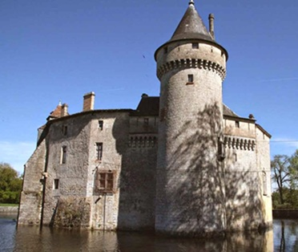

Montesquieu

Montesquieu (1689 - 1755)
Montesquieu, pseudônimo de Charles-Louis de Secondat, Barão de La Brède e de Montesquieu, foi um filósofo e jurista francês, conhecido por sua teoria da separação dos poderes. Ele defendia que o poder político deveria ser dividido em três ramos independentes: Executivo, Legislativo e Judiciário, para evitar abusos e garantir a liberdade. Sua obra mais famosa, "O Espírito das Leis", influenciou profundamente o pensamento político e jurídico, sendo considerado um dos grandes nomes do Iluminismo.
Local de Nascimento
Brède é uma comuna francesa na região administrativa da Nova Aquitânia, no departamento da Gironda. Estende-se por uma área de 23,33 km². Em 2010 a comuna tinha 4 857 habitantes.